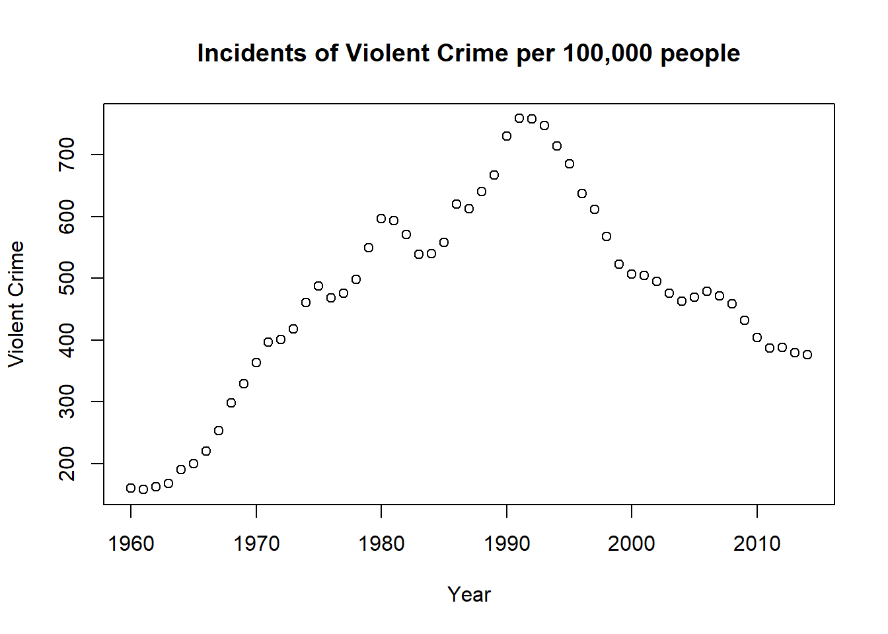
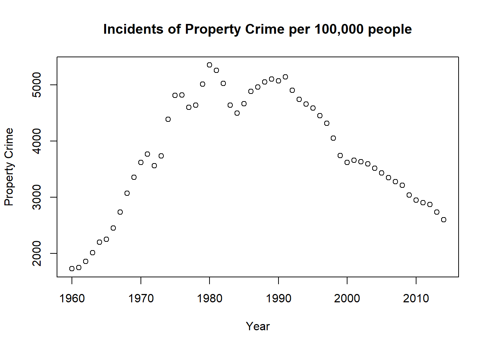
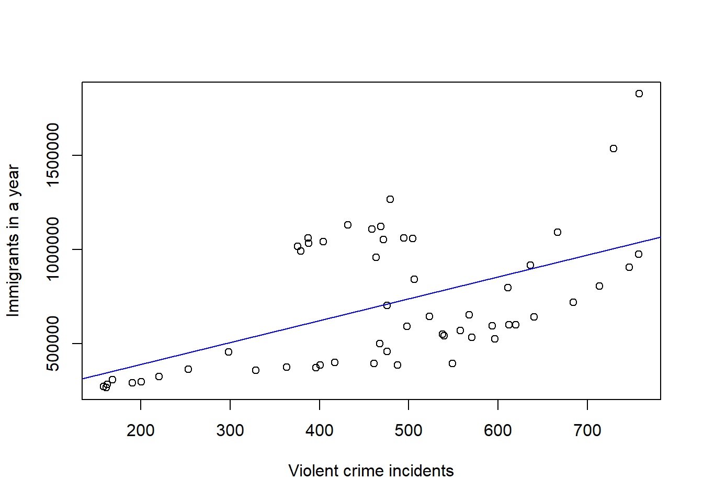
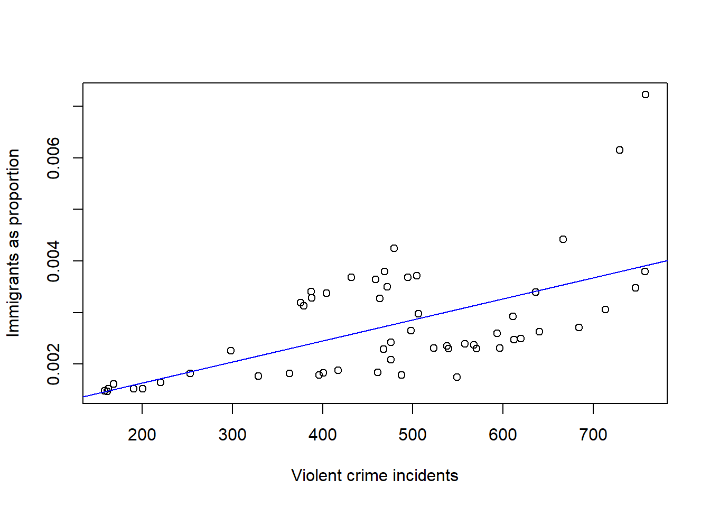
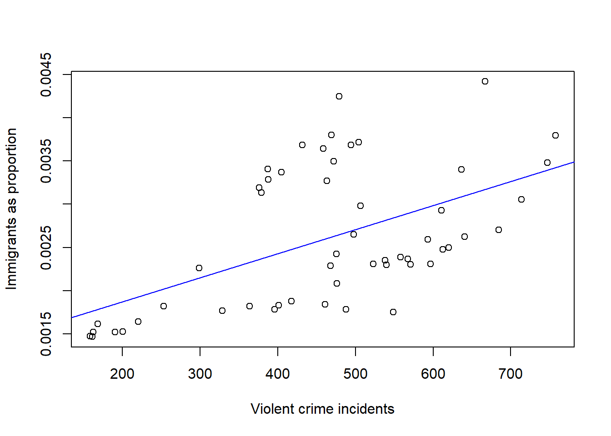
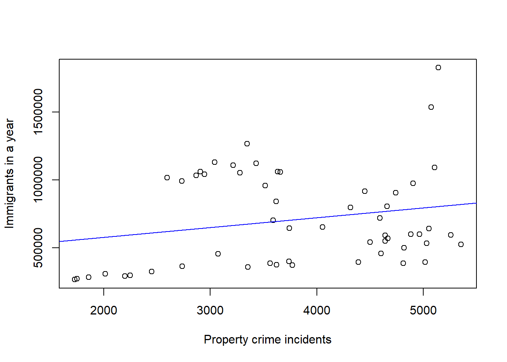
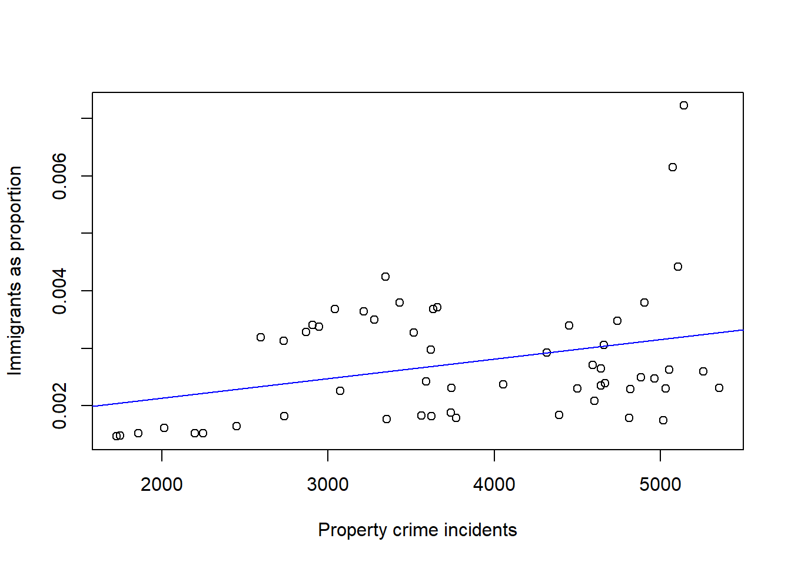
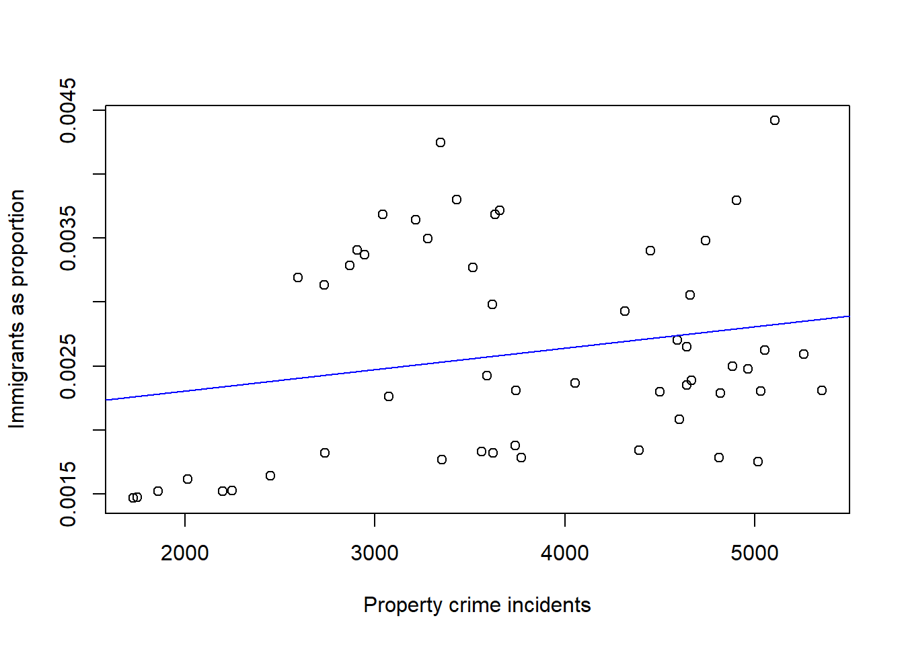

#datasets needed
uscrime <- read.csv("USCrime.csv")
legal <- read.csv("legal.csv")
# the following makes it so that we don't have abbreviated numbers showing in the x and y axes.
options(scipen = 999)
# set names for columns
uscrime <- setNames(uscrime, c("year", "population", "violent", "property", "violent_percentage", "pre"))
legal <- setNames(legal, c("immi_year", "immi_pop", "immi_percent", "pre2"))Let’s first look at crime rates in the United States from 1960-2014. Why? Because it’s fun! It’s also going to give us a sense of how violent crime and property crime were measured over that time period.
plot(uscrime$year,uscrime$violent, main= "Incidents of Violent Crime per 100,000 people",
xlab= "Year", ylab= "Violent Crime") 
plot(uscrime$year,uscrime$property, main= "Incidents of Property Crime per 100,000 people",
xlab= "Year", ylab= "Property Crime") 
Now onto the comparisons. Let’s analyze legal immigration and its relationship to crime rates. These legal immigration statistics refer to the number of people who legally entered the United States in a given year.
violentlegal <- (lm(legal$immi_pop ~ uscrime$violent))
plot(uscrime$violent, legal$immi_pop, xlab ="Violent crime incidents", ylab ="Immigrants in a year")
abline(violentlegal, col="blue")
summary(violentlegal)##
## Call:
## lm(formula = legal$immi_pop ~ uscrime$violent)
##
## Residuals:
## Min 1Q Median 3Q Max
## -401854 -238967 -89972 288004 786900
##
## Coefficients:
## Estimate Std. Error t value Pr(>|t|)
## (Intercept) 157254 125297 1.255 0.215
## uscrime$violent 1164 251 4.637 0.0000235 ***
## ---
## Signif. codes: 0 '***' 0.001 '**' 0.01 '*' 0.05 '.' 0.1 ' ' 1
##
## Residual standard error: 297400 on 53 degrees of freedom
## Multiple R-squared: 0.2886, Adjusted R-squared: 0.2752
## F-statistic: 21.5 on 1 and 53 DF, p-value: 0.00002347cor(uscrime$violent, legal$immi_pop)## [1] 0.5372411Above we see the association between violent crime and legal immigration. The regression line shows a positive, linear relationship. There’s moderate-to-strong strength between these two variables. The correlation is 0.54. The p-value is a very small 0.000023, which shows a statistically significant result. This means that this relationship has a very small chance of occurring by chance.
# Adding another dataset here. This shows the total population of the United States on an annual basis. I'm using this as my denominator when seeing how big of a proportion -- year by year -- an immigration category is of the overall US population.
usapop <- read.csv("usapop.csv")
usapop <- setNames(usapop, c("date", "uspop"))
# Now I'll be comparing the violent crime rate to legal immigration, with legal immigration as a proportion of the overall US population.
legal_adjusted <- c(legal$immi_pop)/c(usapop$uspop)
violentlegal_adjusted <- (lm(legal_adjusted ~ uscrime$violent))
plot(uscrime$violent, legal_adjusted, xlab ="Violent crime incidents", ylab ="Immigrants as proportion")
abline(violentlegal_adjusted, col="blue")
cor(uscrime$violent, legal_adjusted)## [1] 0.5920302summary(violentlegal_adjusted)##
## Call:
## lm(formula = legal_adjusted ~ uscrime$violent)
##
## Residuals:
## Min 1Q Median 3Q Max
## -0.0013088 -0.0006694 -0.0001152 0.0007546 0.0033083
##
## Coefficients:
## Estimate Std. Error t value Pr(>|t|)
## (Intercept) 0.0008277914 0.0003797158 2.180 0.0337 *
## uscrime$violent 0.0000040677 0.0000007606 5.348 0.00000193 ***
## ---
## Signif. codes: 0 '***' 0.001 '**' 0.01 '*' 0.05 '.' 0.1 ' ' 1
##
## Residual standard error: 0.0009014 on 53 degrees of freedom
## Multiple R-squared: 0.3505, Adjusted R-squared: 0.3382
## F-statistic: 28.6 on 1 and 53 DF, p-value: 0.000001928After adjusting for the impact that legal immigration had on the United States population, the correlation becomes a little bit stronger. The correlation between legal immigration and violent crime incidents is now 0.59, and again there is a positive, linear correlation. The p-value is a tiny 0.0000019, which shows a statistically signficant result.
I’m curious to see what the results would be if we removed the two observations in the upper right corner. What would the correlation be then?
# I removed data from 1990 and 1991 and reloaded the files.
legal2 <- read.csv("legal2.csv")
legal2 <- setNames(legal2, c("immi_year", "immi_pop", "immi_percent", "pre2"))
usapop2 <- read.csv("usapop2.csv")
usapop2 <- setNames(usapop2, c("date", "uspop"))
uscrime2 <- read.csv("USCrime2.csv")
uscrime2 <- setNames(uscrime2, c("year", "population", "violent", "property", "violent_percentage", "pre"))
legal_adjusted2 <- c(legal2$immi_pop)/c(usapop2$uspop)
violentlegal_adjusted2 <- (lm(legal_adjusted2 ~ uscrime2$violent))
plot(uscrime2$violent, legal_adjusted2, xlab ="Violent crime incidents", ylab ="Immigrants as proportion")
abline(violentlegal_adjusted2, col="blue")
cor(uscrime2$violent, legal_adjusted2)## [1] 0.537407summary(violentlegal_adjusted2)##
## Call:
## lm(formula = legal_adjusted2 ~ uscrime2$violent)
##
## Residuals:
## Min 1Q Median 3Q Max
## -0.0010913 -0.0005160 -0.0002779 0.0006669 0.0015940
##
## Coefficients:
## Estimate Std. Error t value Pr(>|t|)
## (Intercept) 0.0013148526 0.0002983005 4.408 0.0000539 ***
## uscrime2$violent 0.0000027842 0.0000006118 4.551 0.0000334 ***
## ---
## Signif. codes: 0 '***' 0.001 '**' 0.01 '*' 0.05 '.' 0.1 ' ' 1
##
## Residual standard error: 0.0006844 on 51 degrees of freedom
## Multiple R-squared: 0.2888, Adjusted R-squared: 0.2749
## F-statistic: 20.71 on 1 and 51 DF, p-value: 0.00003335Removing those two observations – which were large residuals – actually lowered the correlation back to 0.54. I guess those were pulling the slope closer to 1.
Now let’s look at the relationship between legal immigration and property crime.
propertylegal <- (lm(legal$immi_pop ~ uscrime$property))
plot(uscrime$property, legal$immi_pop, xlab ="Property crime incidents", ylab ="Immigrants in a year")
abline(propertylegal, col="blue")
summary(propertylegal)##
## Call:
## lm(formula = legal$immi_pop ~ uscrime$property)
##
## Residuals:
## Min 1Q Median 3Q Max
## -400232 -286539 -177640 325093 1023190
##
## Coefficients:
## Estimate Std. Error t value Pr(>|t|)
## (Intercept) 432066.00 179289.25 2.410 0.0195 *
## uscrime$property 72.24 45.38 1.592 0.1174
## ---
## Signif. codes: 0 '***' 0.001 '**' 0.01 '*' 0.05 '.' 0.1 ' ' 1
##
## Residual standard error: 344500 on 53 degrees of freedom
## Multiple R-squared: 0.04563, Adjusted R-squared: 0.02762
## F-statistic: 2.534 on 1 and 53 DF, p-value: 0.1174cor(uscrime$property, legal$immi_pop)## [1] 0.2136083While there’s still a positive, linear relationship, the strength of the correlation is weak here. The correlation is 0.21. The p-value is 0.12 so these results do not show a statistically significant relationship.
propertylegal_adjusted <- (lm(legal_adjusted ~ uscrime$property))
plot(uscrime$property, legal_adjusted, xlab ="Property crime incidents", ylab ="Immigrants as proportion")
abline(propertylegal_adjusted, col="blue")
cor(uscrime$property, legal_adjusted)## [1] 0.3177849summary(propertylegal_adjusted)##
## Call:
## lm(formula = legal_adjusted ~ uscrime$property)
##
## Residuals:
## Min 1Q Median 3Q Max
## -0.0014093 -0.0006836 -0.0004645 0.0008020 0.0040171
##
## Coefficients:
## Estimate Std. Error t value Pr(>|t|)
## (Intercept) 0.0014510528 0.0005518915 2.629 0.0112 *
## uscrime$property 0.0000003409 0.0000001397 2.440 0.0181 *
## ---
## Signif. codes: 0 '***' 0.001 '**' 0.01 '*' 0.05 '.' 0.1 ' ' 1
##
## Residual standard error: 0.00106 on 53 degrees of freedom
## Multiple R-squared: 0.101, Adjusted R-squared: 0.08402
## F-statistic: 5.954 on 1 and 53 DF, p-value: 0.01807After adjusting for legal immigration’s impact on the US population, the result becomes significant. The p-value is 0.018. This chart shows another positive, linear relationship. The strength is weak-to-moderate, as there’s a correlation of 0.32.
What would happen if we removed the 1990 and 1991 data again? Let’s see.
propertylegal_adjusted2 <- (lm(legal_adjusted2 ~ uscrime2$property))
plot(uscrime2$property, legal_adjusted2, xlab ="Property crime incidents", ylab ="Immigrants as proportion")
abline(propertylegal_adjusted2, col="blue")
cor(uscrime2$property, legal_adjusted2)## [1] 0.2124711summary(propertylegal_adjusted2)##
## Call:
## lm(formula = legal_adjusted2 ~ uscrime2$property)
##
## Residuals:
## Min 1Q Median 3Q Max
## -0.0010605 -0.0007176 -0.0002830 0.0007117 0.0017105
##
## Coefficients:
## Estimate Std. Error t value Pr(>|t|)
## (Intercept) 0.0019728668 0.0004202924 4.694 0.0000205 ***
## uscrime2$property 0.0000001673 0.0000001078 1.553 0.127
## ---
## Signif. codes: 0 '***' 0.001 '**' 0.01 '*' 0.05 '.' 0.1 ' ' 1
##
## Residual standard error: 0.0007931 on 51 degrees of freedom
## Multiple R-squared: 0.04514, Adjusted R-squared: 0.02642
## F-statistic: 2.411 on 1 and 51 DF, p-value: 0.1267Removing those two years (and the associated data) drops the correlation to 0.21 and makes the result no longer statistically significant. The p-value is now 0.13. Is it fair to remove this data? Perhaps not, but it’s worth noting that removing just two observations from an original dataset of 55 changes the p-value significantly.